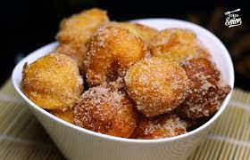

Buñuelos De Viento

La receta de buñuelos de viento se elabora tradicionalmente por
Carnaval, Semana Santa y el Día de Todos los Santos. Estos son
bolitas que están elaboradas con una masa de harina, huevos y
leche, que al freírlas se hinchan y por eso se las llama "de
viento". Este dulce es muy sencillo de preparar, ya que sus
ingredientes son muy básicos y suelen estar en toda cocina. En
este caso, os proponemos la receta de buñuelos de viento de la
abuela con anís, puesto que en muchas regiones españolas es muy
típico aromatizarlas con este licor.
Ingredientes
- 100 mililitros de agua
- 150 mililitros de leche
- 50 gramos de mantequilla
- 150 gramos de harina
- 2 huevos
- 1 cucharada postre de levadura
- 1 pizca de sal
- 2 cucharadas soperas de anís (opcional)
- 2 vasos de aceite de girasol
- 50 gramos de azúcar (para rebozar)
Pasos
- Para empezar con la receta de buñuelos de viento caseros,
primero incorpora en un cazo la leche, el agua, la mantequilla
y el anís. Remueve hasta que la mezcla rompa a hervir.
- Añade de golpe la harina junto con la levadura y la sal. Ayúdate
de una cuchara de palo para remover hasta que la masa de buñuelos
de viento se despegue de las paredes del cazo.
- Retira el cazo del fuego y deja que repose unos 10 minutos.
Agrega los huevos uno a uno y mezcla enérgicamente la masa.
El proceso te llevará unos minutos hasta que todos los ingredientes
estén bien integrados. Añade de 2 a 3 huevos según te quede la masa.
- Para conseguir unos buñuelos de viento esponjosos, no te debe
quedar una masa demasiado ligera. Por ello, si es necesario
puedes incorporar un huevo más.
- Calienta en un cazo o sartén un buen chorro de aceite. Forma
las bolitas con ayuda de dos cucharas. Para determinar el
tamaño, ten en cuenta que lo ideal es que se puedan comer de
un bocado.
- Cuando el aceite esté bien caliente, fríe los buñuelos de
viento caseros cuidando que se cocinen bien por ambas partes.
- Una vez que ya estén dorados, sácalos y retira el exceso
de aceite con ayuda de papel absorbente. A continuación, todavía
calientes, pásalos por azúcar blanco.
- ¡Listo!